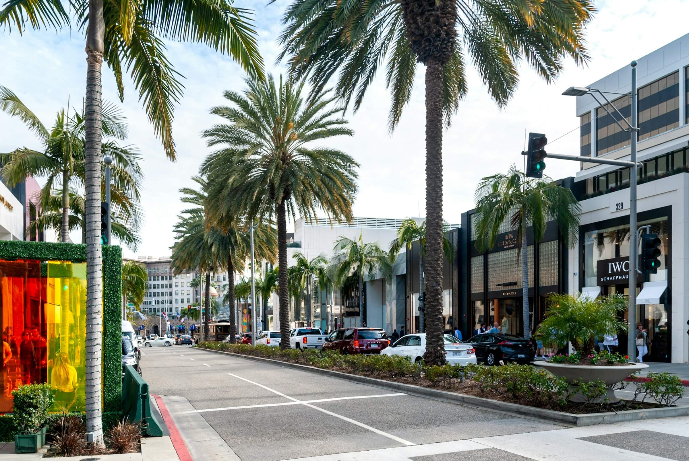
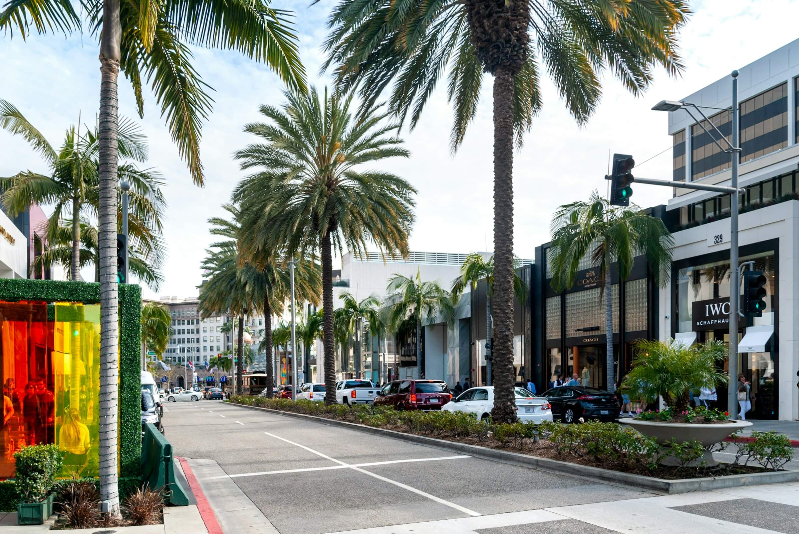
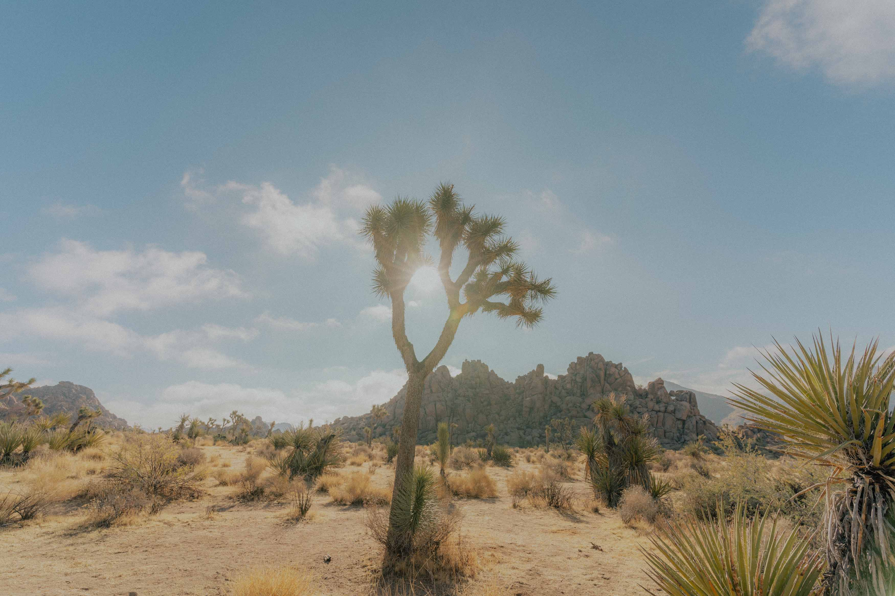
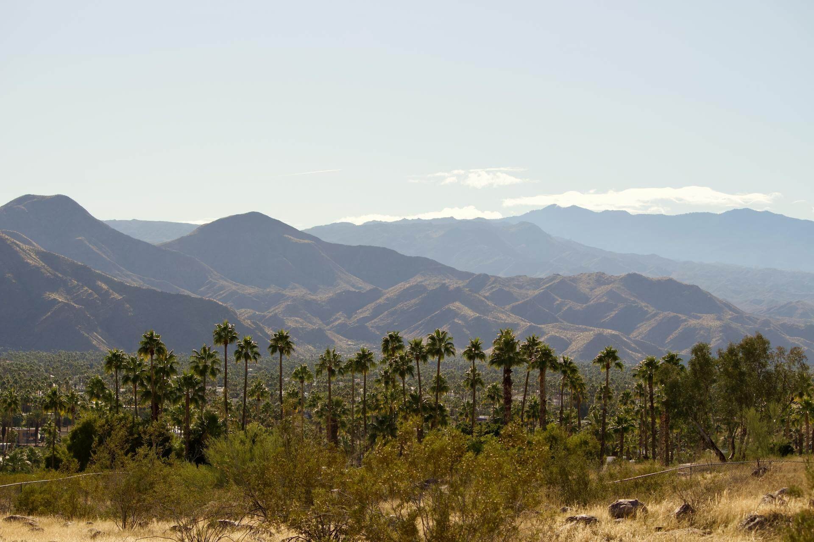
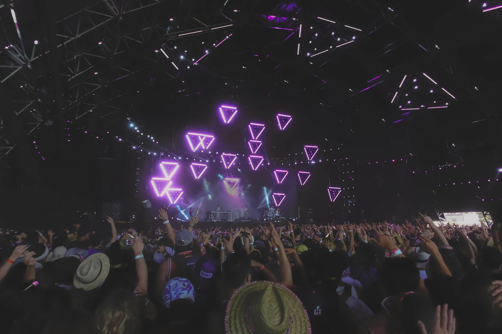
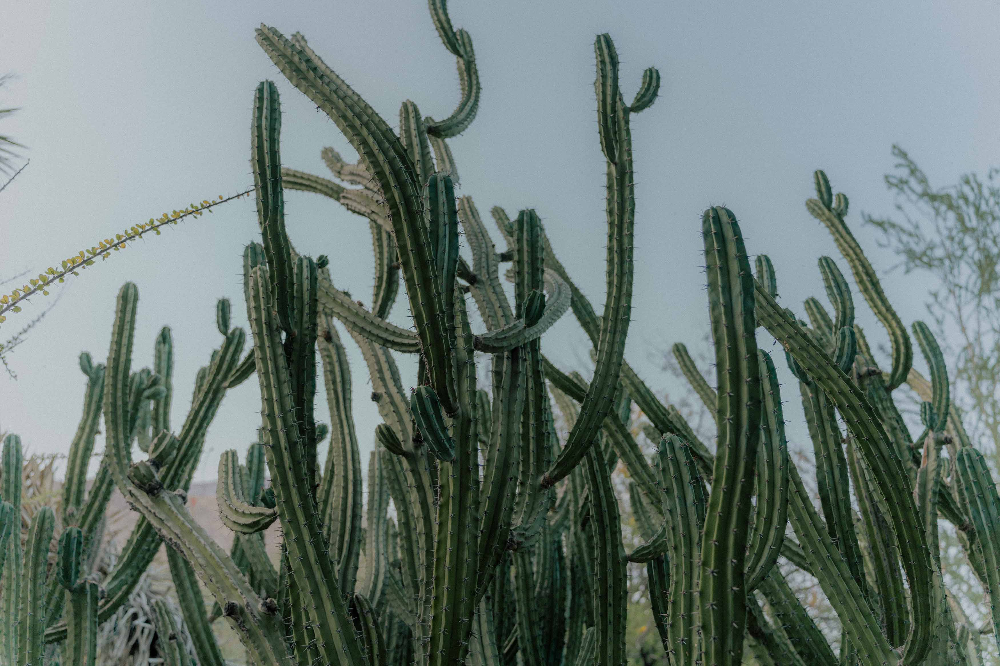
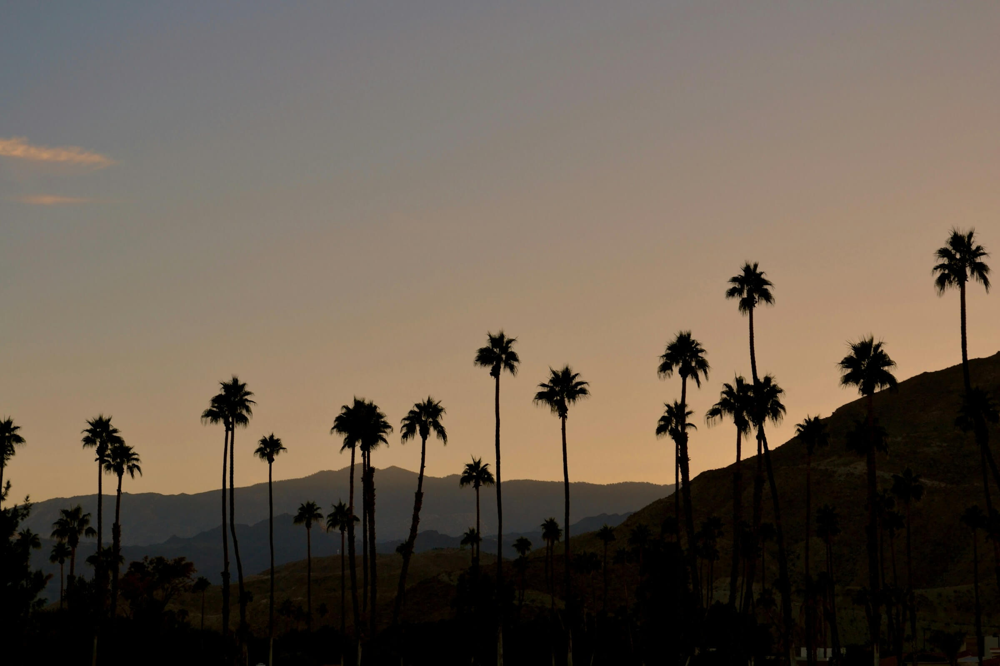

Downtown Palm Springs
Shopping, food, art, there is something for everyone!
Shopping, food, art, there is something for everyone!
Spend a day or two driving and hiking through this desert paradise. Home to the famous Joshua Trees.
Find some shade in this desert palm tree forest.
Bring your friends and a tent to enjoy your favorite artists at Coachella
Love desert plants? Check out the regional desert plants native to Palm Springs at this botanical garden.
Every Thursday evening, the main street is shut down for everyone to enjoy tacos, crepes, and more, and support local vendors and artists
